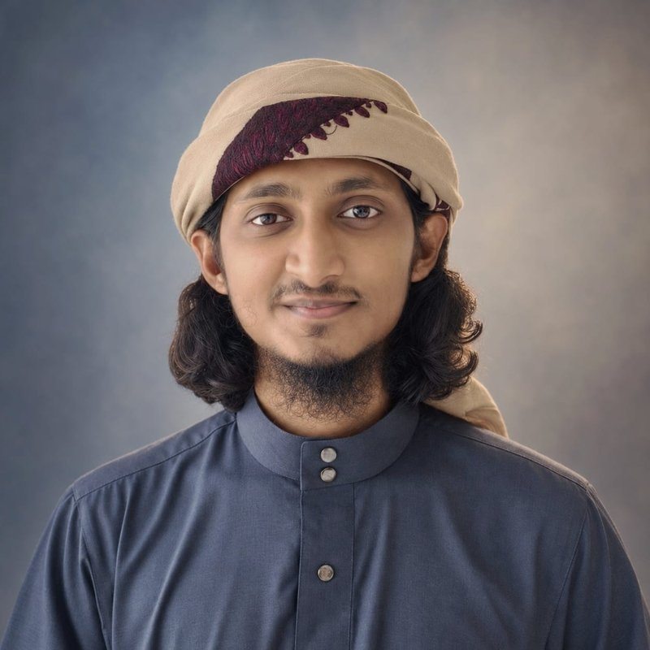

Hello, I’m
Iftekhirul Islam Muhid
Electrical and Electronic Engineer · Robotics & Autonomous Systems · Machine Learning
I build sensor-driven robots with PID control and apply machine learning and deep learning to autonomous systems. My undergraduate thesis was a computational study of MgSiP₂ solar cells. I’m applying for a Master’s in robotics and mechatronics.
Download CV
About
Robotics and autonomous systems
Sensor-driven robots, PID control, and industrial automation, with a growing focus on UAVs and aerial robotics. I trained in PLC, DCS, and SCADA at TICI, and I mentor teams at robotics competitions.
Machine learning and research
Machine learning and deep learning for autonomous systems. My thesis used DFT, device simulation, and a physics-decomposed ML model, and I co-authored a paper accepted at IEEE SPICSCON 2026.
Research
Research interests: Robotics and autonomous systems, UAVs and aerial robotics, and machine learning and deep learning for autonomous systems.
Computational Investigation of MgSiP₂-Based Solar Cells Using DFT, Device Simulation, and Machine Learning
- Performed DFT calculations with Quantum ESPRESSO: band gap of 1.37 eV and an absorption coefficient of about 10⁶ cm⁻¹.
- Optimized the device in SCAPS-1D with one-factor-at-a-time (OFAT) sweeps, reaching a simulated efficiency of 27.48%.
- Built a two-stage, physics-decomposed machine learning model on 4,790 samples (R² = 0.9908, RMSE = 0.522), with SHAP analysis of key parameters.
Publications
A Reliability Oriented Ensemble Learning Framework for Cardiovascular Disease Prediction with SHAP Based Explainability
M. Nayem, N. H. Ratul, I. I. Muhid, M. Mohiuzzaman, M. S. Farid, S. A. Dipa
The paper is accepted and not online yet. The DOI link will go here.
Projects
Autonomous line following robot
The robot follows a track using only what its sensors read at each moment. It stores no map or path.
- Detects the line in real time with an IR (QTR) sensor array and chooses the correct track dynamically.
- Uses PID control for smooth sharp turns and minimal deviation.
- Built with Arduino Nano, QTR sensor array, and a motor driver.
The Health Nourish App
Co-developed a mobile app with an LLM-powered chatbot for personalized diet routines and health tips.
Next robotics project
Add a ROS 2, Gazebo, or hardware project here. Copy the card above and change the title, bullets, tags, and links.
Education
Gopalganj Science and Technology University
Bachelor of Science in Electrical and Electronic Engineering
Chattogram Cantonment Public College
Higher Secondary Certificate (HSC), Science
Railway Public High School
Secondary School Certificate (SSC)
Skills
- Programming
- Python, C, C++, MATLAB, Dart, Arduino, 8086 Assembly
- Machine learning and data science
- TensorFlow, PyTorch, Scikit-learn, NumPy, Pandas, SciPy, Matplotlib, Seaborn, Plotly
- Developer tools
- Git, GitHub, Linux, shell scripting, LaTeX
- Design and automation tools
- MATLAB Simulink, TIA Portal, Proteus, AutoCAD, Logisim
- Scientific computing and simulation
- Quantum ESPRESSO (DFT), SCAPS-1D
Achievements and training
Industrial training, TICI (BCIC)
Two-week course in Industrial Technology on Electrical Engineering and Instrumentation.
- Transformers, generators and motors, substations, earthing, and generator synchronization.
- Process instrumentation, control loops, PLC, DCS, and SCADA.
Awards and leadership
- Pre-Seed Funding Award of BDT 25,000 with Team EduVeno, University Innovation Hub Programme (UIHP) Cohort 5, GSTU, 2025. I led the team in securing the funding.
- Ranked 17th at IEEEXtreme 17.0 in the Bangladesh region, 2023.
- President, Programming and Soft Skills Club (2025–2026).
- Webmaster, IEEE GSTU Student Branch (2024–2025).
- Organized and mentored participants of RoboFest’24.
- Instructor of C and Python Programming at the University Programming Club.
- Founder and Director, The Wizzy Corp., a start-up founded in 2024.
- Competed in national robotics competitions such as Ignition and BITROBOT.
Contact
I’m open to Master’s supervisors, labs, and programs in robotics, mechatronics, and UAV systems. Email is the best way to reach me.